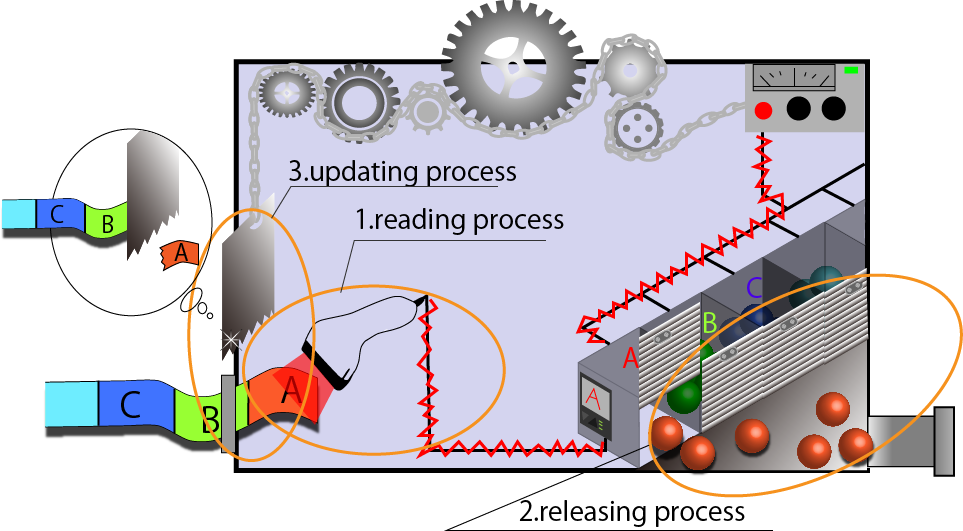
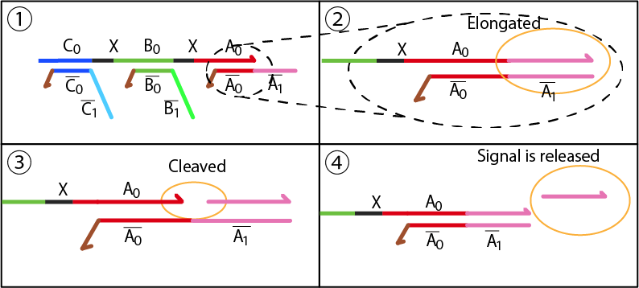
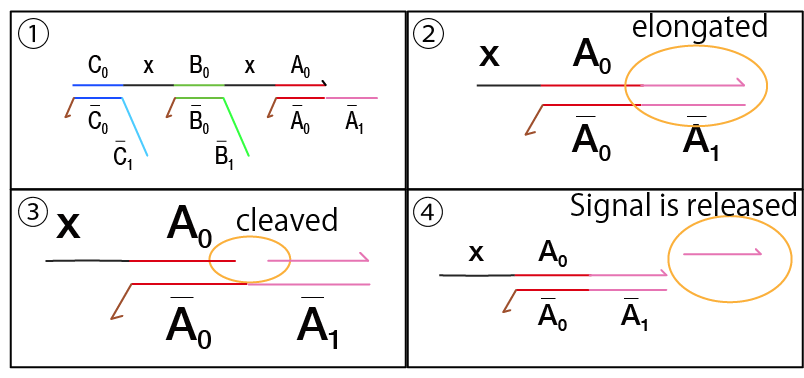
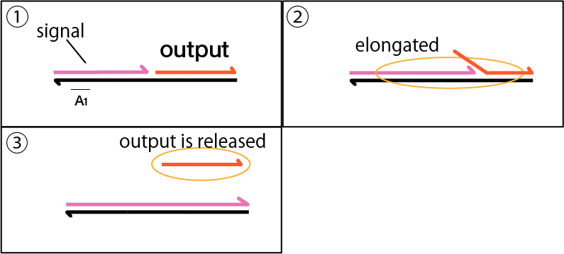
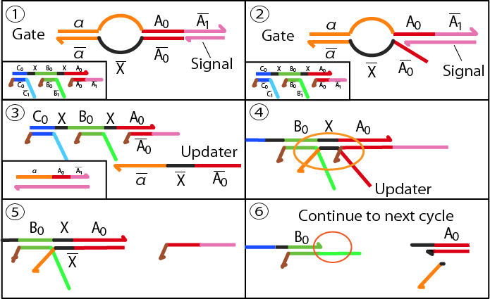
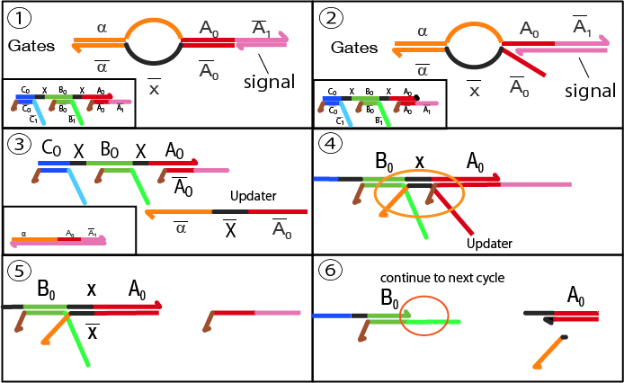
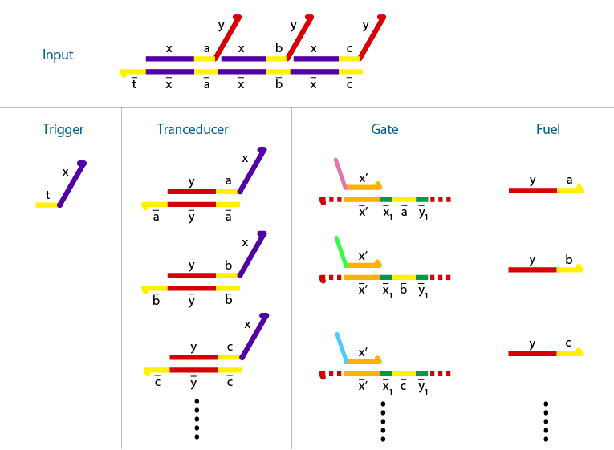
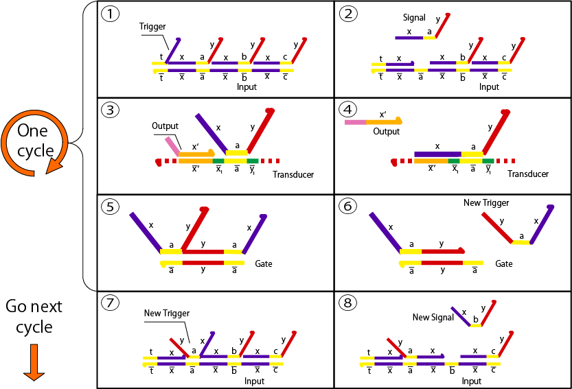
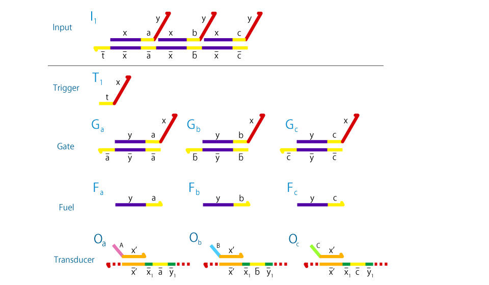
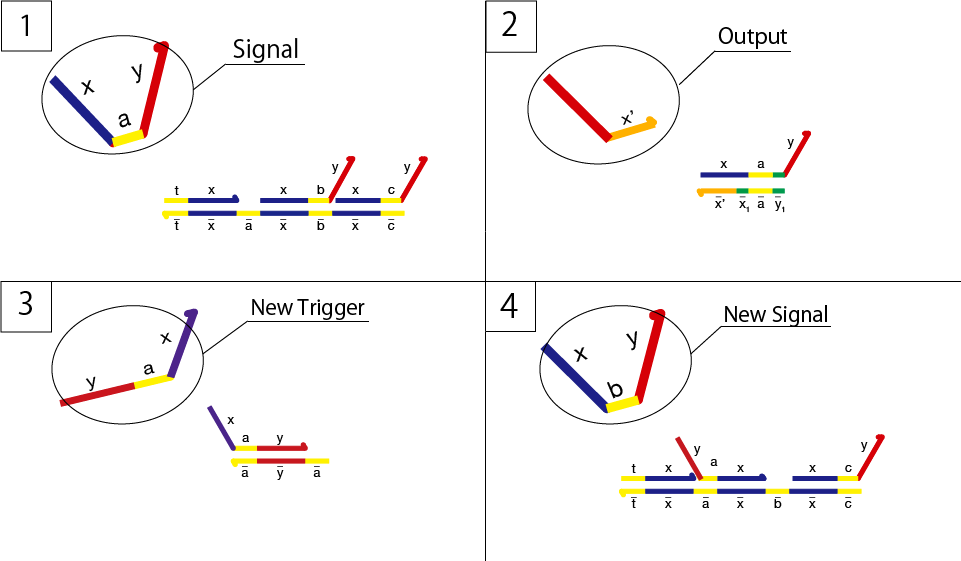

Design
Enzymatic device
<<<<<<< HEAD
Here, we explain the device composed of DNA and enzymes. First, we overview the outline of mechanism.

The device includes three processes, which are reading process, releasing process and updating process. In reading process, Input DNA gives instructions of the releasing order to the device. With the first instruction, a corresponding signal is activated and transmitted to next processes. In releasing process, Output is released by the signal from the previous process. After the releasing process, updating process starts. In updating process, the Input is renewed by deleting the first instruction in the Input DNA. By cycling these three processes, single stranded DNAs are generated in order, whose sequence is coded in Input DNA.
Reading process
In the following part, we explain the details of the three processes.
The reading process is composed of Templates, Transducer and Gates as shown below.02.png)
Step1. Templates hybridize with Input DNA, which results in Input/Template complex.
Step2. Polymerase elongates Input from 3' end. We introduce unpaired bases at 5' end of the Template to prevent undesired elongation.
Step3. Nickase cleaves elongated Input.
Step4. Polymerase elongates remaining Input from 3' end again with its strand displacement activity. As a result, Signal is released.
Repeating Step3 and Step4, single stranded DNA (Signal) is amplified. The signal will be transmitted to the next processes: releasing and updating processes.

Releasing process
Following chemical reactions represent the releasing process. It conposed of Signal, Transducer, and polymerase.
Step1. Signal hybridizes with a single stranded part of Transducer.
Step2. Polymerase elongates Signal from 3' end.
Step3. Output DNA is released by the strand displacement activity of polymerase.
This process takes place just after reading process because the toehold region of Transducer is slightly longer than that of Gate.
1025neo.png) =======
=======
Here, we explain the device composed of DNA and enzymes. First, we explain outline of the mechanism.
The device is composed of three processes. Input DNA codes sequence of Output releasing. the three processes are reading process, releasing process and updating process. In reading process, Input DNA gives instructions of the releasing order to the device. With the first instruction, a corresponding signal is activated and cascades of next processes. In releasing process, Output is released by the signal from the previous process. After the releasing process, updating process starts. In updating process, the Input is renewed by deleting the first instruction in the Input DNA. By cycling these three processes, single stranded DNAs are generated in order.
Reading process
In the following part, we explain the details of the three processes.
The reading process is composed of Templates, Transducer and Gates as shown below.
The reading process consists of four steps.
Step1. Templates hybridize with input DNA.Step2. Polymerase elongates Input at its from 3' end. We introduce unpaired bases at 5' end of the Template to prevent undesired elongation.
Step3. Nickase cleaves elongated Input.
Step4. Polymerase elongates remaining Input from 3' end again with its strand displacement activity. As a result, Signal is released.
Repeating Step3 and Step4, single stranded DNA (Signal) is amplified. The signal will be used in the next processes: releasing and updating process.

Releasing process
Following chemical reactions represent the releaseing process. It involves Signal, Transducer, and polymerase.
Step1. Signal hybridizes with a single stranded part of Transducer.
Step2. Polymerase elongates Signal from 3' end.
Step3. Output DNA are released by the strand displacement activity of polymerase.
This process takes place just after reading process because the toehold region of Transducer is slightly longer than that of the gates.

>>>>>>> origin/master
Updating process
<<<<<<< HEADUpdating process composed of Input/Template complex, Signal, and Gate.
=======
Updating process involves Input/Template, Signal, and Gate.
>>>>>>> origin/master
Step1. Signal hybridizes with a single stranded part of Gate.
Step2. Polymerase elongates DNA from 3' end.
Step3. Single stranded DNA (Updater) is released by strand displacement activity of polymerase.
<<<<<<< HEAD
Step4. Updater hybridizes with Input/Template complex to form a recognition site of restriction enzyme.
Step5. Template-A is released from Input by strand displacement.
Step6. Restriction enzyme cleaves duplex of Updater and Input/Template complex. Consequently, Input is updated for the next cycle.
This cycle is repeated again and again until all the instructions written in Input are executed. Eventually, the Outputs are released in programmed order.

======= Step4. Updater hybridizes with Input/template complex.Step5. Template-A is released from Input by strand displacement.
Step6. Restriction enzyme cleaves duplex of Updater and Input/template complex. Consenquently Input is updated for the next cycle.
This cycle is repeated again and again until all the instructions written in Input are executed. Eventually, the Outputs are released in programmed order. 
>>>>>>> origin/masterEnzyme-free device
<<<<<<< HEAD
Here, we explain the mechanisms of Enzyme-free device (using only DNA).
Enzyme-free device is designed based on seesaw gates [1] which is capable of cascading strand displacement reactions. Components of the device are Input, Trigger, Gate, Transducer, and Fuel.

Like Enzymatic device, the order of releasing output is coded in Input, while other DNA components are utilized for cascading the reactions. Cascading reactions are implemented by the following steps.
Step1. Trigger hybridizes with Input.
Step2. Signal is released by strand displacement reaction.
Step3. Signal hybridizes with Transducer. This step takes place just after step2 because the toehold region of Transducer is slightly longer than that of Gates.
Step4. The first Output is released by strand displacement.
Step5. Remaining Signal starts to hybridize with Gate.
Step6. By consuming Fuel, a new Trigger is released for the next cascades. Since this is catalytic reaction, sufficient amount of trigger is released from small amount of Signal.
Step7. The new trigger hybridizes with a single stranded part of Input.
Step8. A new Signal is released by strand displacement reaction.
The device repeats the cascading reaction until all Outputs are released. As well as Enzymatic device, programmability is an important feature of the device.

=======Here,we explain the mechanisms of enzyme-free device(using only DNA).
Enzyme-free device is designed based on seesaw gates[1] which is capable of cascading strand displacement reactions.

Components of the device are Input , Trigger, Gate, Transducer and Fuel.
Like Enzymatic device, the order of releasing output is coded in Input, while other DNA components are utilized for cascading the reactions.
Cascading reactions are implemented by the following steps.

Step1. Trigger hybridizes with Input.Step2. Signal is released by strand displacement reaction.
Step3. Signal hybridizes with Transducer. This step takes place just after step2 because the toehold region of Transducer is slightly longer than that of Gates.
Step4. The first Output is released by strand displacement.
Step5. Remaining Signal starts to hybridize with Gate. Since this is catalytic reaction, sufficient amount of trigger is released from small amount of Signal.
Step6. A new Trigger is consequently released for the next cascades.
Step7. The new trigger hybridizes with a single stranded part of Input.
Step8. A new Signal is released by strand displacement reaction.
The device repeats the cascading reaction until all Outputs are released. As well as Enzymatic device, programmability is an important feature of the device.
>>>>>>> origin/master
Reference
<<<<<<< HEAD[1] L. Qian, E, Winfree, Science 332 (6034) (2011) 1196-1201 =======
[1]L. Qian, E, Winfree, Science 332 (6034) (2011) 1196-1201 >>>>>>> origin/master